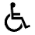

Die Anleitung aus dem Github kannst Du auch direkt hier lokal im Browser öffnen.
Dazu muss allerdings zuerst eine Browsererweiterung für die Darstellung des Markdowns (.md) installiert werden. Einen Markdown Viewer gibt es für alle modernen Browser.
readme.mdMarkdown ist wie HTML eine Auszeichnungssprache. Es ist leichter zu schreiben und weniger Code.
Maus bei gedrückter linker Maustaste bewegen, um die Karte zu verschieben.
Durch das Bewegen des Mausrads kann in der Karte gezoomt werden.
Auf einen Kartenausschnitt kann gezoomt werden, indem bei gedrückter Shift-Taste mit gedrückter linker Maustaste ein Rahmen in der Karte aufgezogen wird.
Durch Anklicken der Orte werden die Detailinformationen geöffnet. Es gibt keine entsprechende Funktionalität mit der Tastatur. Zum Öffnen der Detailinformationen der Orte bitte die barrierefreie Version nutzen.
Tab Taste bedienen, bis die Karte im Fokus ist. Durch das Drücken der Plus/Minus Tasten wird gezoomt. Die Pfeiltasten bedienen zum Verschieben der Karte.
Hineinzoomen
Hinauszoomen
Zum eigenen Standort navigieren. Dazu muss die Standortfreigabe im Browser aktiviert werden. Dies macht zumeist nur Sinn bei Mobilgeräten.
Zur initialen Karte navigieren.
 Hilfe
Hilfe
 Impressum & Datenschutzerklärung
Impressum & Datenschutzerklärung
 Zugang zur barrierefreien Version der Webseite. Alle Orte können dort direkt aufzurufen werden, ohne die Kartenanwendung.